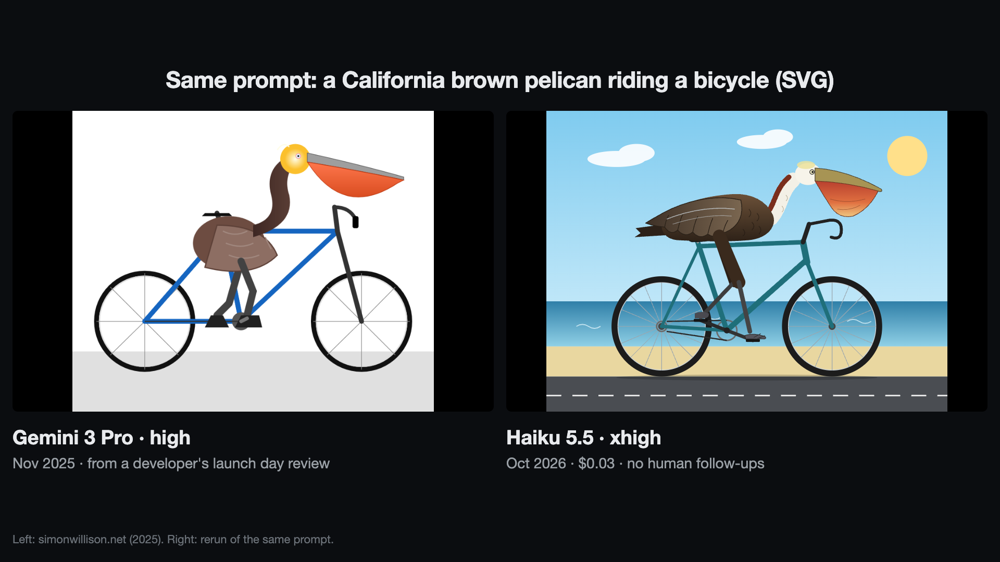
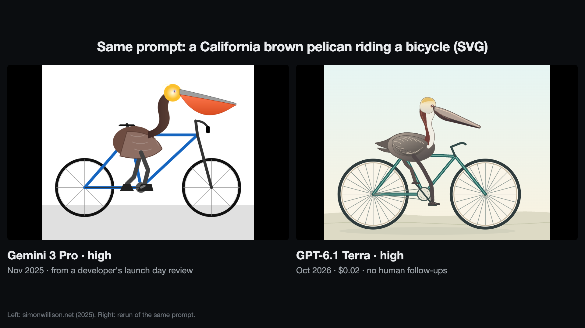

2025 Gemini 3 demos, rerun on Haiku 5.5 and GPT-6.1 Terra
October 2026. Four things people showed off on Gemini 3's launch day, November 18, 2025, given again with the same prompts to two of today's cheap models.
An endless voxel forest
A Google DeepMind researcher posted this on launch day from a single line: "three js infinitely procedurally generated voxel art scene of walking through the forest with falling autumn leaves". The clip shows Gemini 3 Pro on the left, then Haiku 5.5 on high, then Terra on high. Haiku's forest on high is made of big orange and yellow blocks, and when I held the forward key, it got stuck against one within five seconds. On xhigh it has grass and dark green trees, and walking forward reached a trunk in about ten seconds. Terra's walks itself down a path, but its trees are big blocks rather than detailed voxel art, few leaves are falling, and it added a title and tagline nobody asked for. Neither matches the original here.
A game that plays itself
DeepMind's co-founder asked for "a beautifully simple game that plays itself" and got Autolife, a particle ecosystem. The three models read the prompt differently. Haiku made classic games on autoplay: Snake on high, Pong on xhigh (shown). Terra made four little characters collecting lights, with a scoreboard.
A voxel scene from a photo
The inventor of GANs gave Gemini 3 a picture and one line: "Code a beautiful voxel art scene inspired by this image." I cropped the input picture from his video and gave it to the new models with the same line. The clip shows Haiku on xhigh, with a large green mound behind the island that isn't in the picture. On high, Haiku's scene has a stray wall behind it.
Terra's page never gets past its loading screen. It imports a Three.js add-on in a way no browser can resolve, and since it had no browser, it finished without finding out. It reported that its syntax check passed. The result is left as it came out.
A pelican on a bicycle


From a well-known developer's launch-day review, which reported Gemini 3 Pro on high as its best result. The prompt asks for spokes, a correct frame, a large pouch, feathers, pedaling and breeding plumage. Terra's bird has the feathers and plumage, but the large pouch is barely there.
Runs
| Demo | Model | Effort | Cost | Time |
|---|---|---|---|---|
| Forest | Haiku 5.5 | high | $0.04 | 3 min 54 s |
| Forest | Haiku 5.5 | xhigh | $0.23 | 8 min 46 s |
| Forest | GPT‑6.1 Terra | high | $0.05 | 69 s |
| Self-playing game | Haiku 5.5 | high | $0.02 | 1 min 45 s |
| Self-playing game | Haiku 5.5 | xhigh | $0.02 | 2 min 24 s |
| Self-playing game | GPT‑6.1 Terra | high | $0.04 | 57 s |
| Voxel scene from a photo | Haiku 5.5 | high | $0.05 | 5 min 8 s |
| Voxel scene from a photo | Haiku 5.5 | xhigh | $0.27 | 8 min 58 s |
| Voxel scene from a photo | GPT‑6.1 Terra | high | $0.05 | 73 s, did not load |
| Pelican | Haiku 5.5 | high | $0.02 | 2 min 8 s |
| Pelican | Haiku 5.5 | xhigh | $0.03 | 3 min 37 s |
| Pelican | GPT‑6.1 Terra | high | $0.02 | 49 s |
| Haiku 5.5 total (8 runs) | $0.69 | |||
| GPT‑6.1 Terra total (4 runs) | $0.17 | |||
How this was run
- One run per demo and effort level, no retries, no follow-up prompts, and the results are shown as they came out.
- Prompts are the originals, word for word. I added one line saying where to save the file, and for the photo demo, which file the picture is.
- Neither model had a browser or web search, so neither saw its page render.
- Haiku started in an empty folder outside my repo, with my personal Claude Code instructions file, Claude Code's memory and my other project folders blocked. An earlier set of these runs, which never went public, had that file loaded by accident, so I reran all eight.
- Costs on xhigh jump where one long turn of thinking passed 100K tokens. Haiku's input rate rises fivefold for requests above that size.
- Haiku ran in Claude Code (
claude-haiku-5-5) and could only read and edit files. Terra ran in Codex CLI (gpt-6.1-terra), which always gives the model a shell, with network access off. Terra used it to write files and check syntax. - Costs are the tokens each run used at API list prices. I ran them on subscriptions, so nothing was charged. The original posts don't give Gemini's cost, so there's no price comparison here.
- The original clips are from public posts and show whatever their authors chose to show. This is a rerun of public demos, not a benchmark.
- For the videos, headless Chrome can't lock the mouse, so the recording tool fakes that part where a page needs it. The models' code is unchanged.